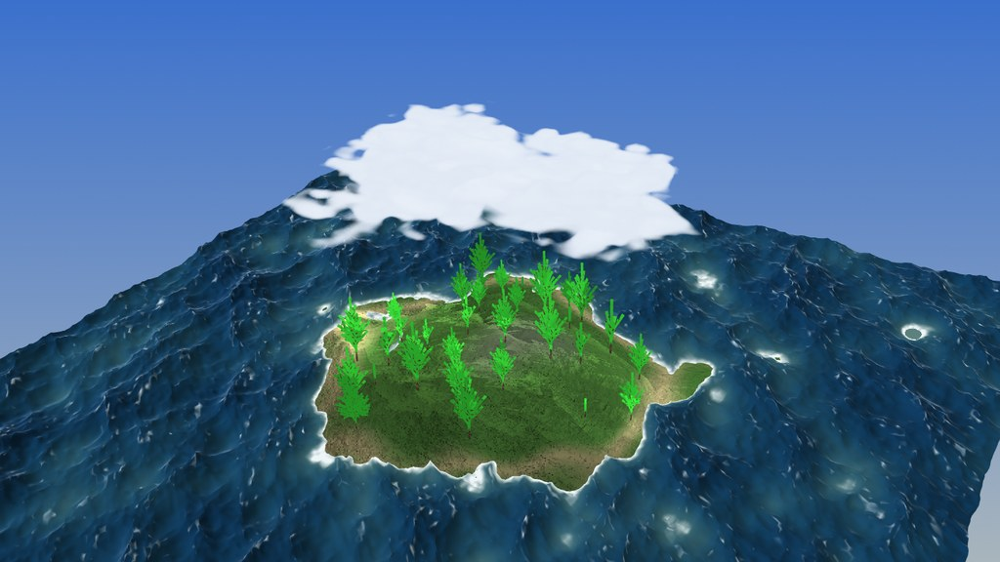
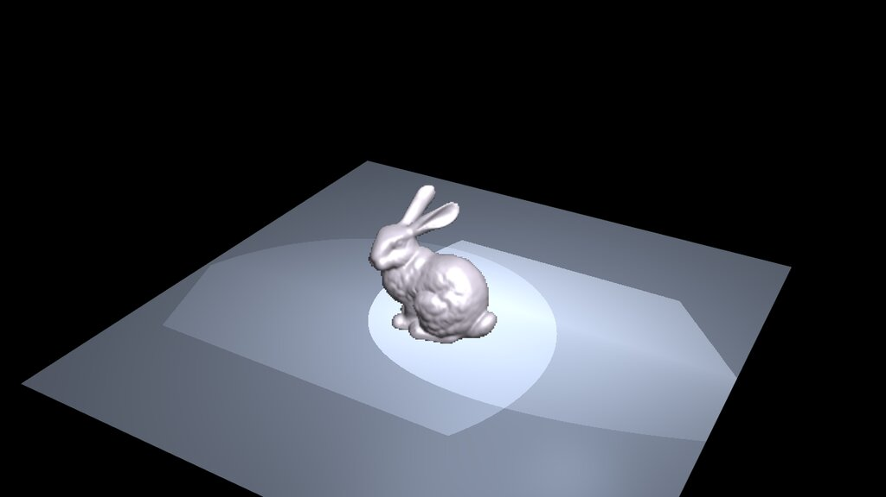
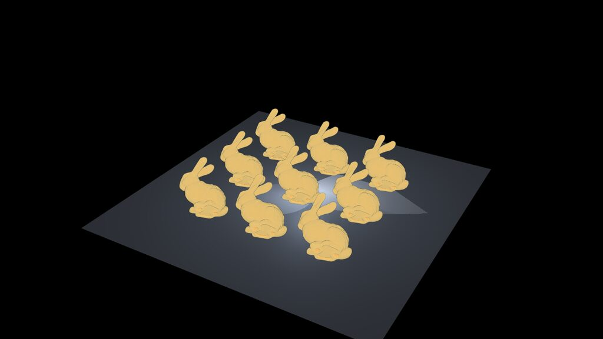
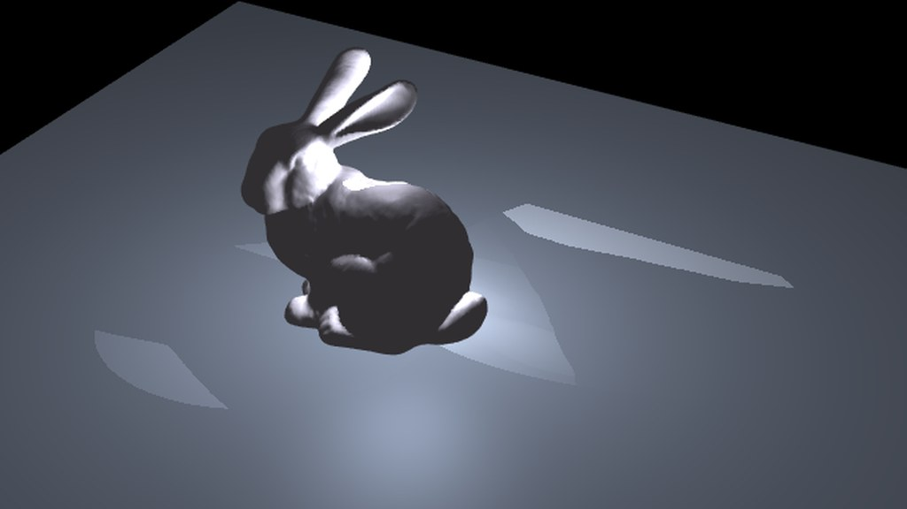

cvcGL · WebAssembly examples
The libcvc scene-graph library, rendering live in your browser — VTK 9.5 cross-compiled to WebAssembly.

lsystem_forest
Fly over a procedural island: L-system trees swaying in the wind, a travelling-wave sea and a GPU ray-cast cloud volume, with shadow maps and a free orbit/fly camera. 100% procedural — nothing is downloaded.
Run it →
lsystem_coast
Sail a procedural coastline where a GPU FFT ocean rolls in: an FFT-synthesised wave spectrum evolved live on the GPU, an L-system shore, sky and sun, with a free orbit/fly camera. 100% procedural — nothing is downloaded.
Run it →
volren_bunny
Two bunnies, two renderers: the classic mesh beside a signed-distance-field volume of the same bunny, raycast on the CPU by cvc::volren and composited into the scene with a per-pixel depth map — watch it occlude and be occluded as it spins. The SDF is computed live from the mesh at startup; the raycast image, its translucent shell and the raster resolution are all software, no GPU volume tricks.
Run it →
volslice_bunny
The classic view-aligned slice compositor from VolumeRover2, ported to cvc::volslice: the bunny's signed-distance volume windowed into a byte texture and colored by a 256-entry transfer function, hundreds of camera-facing slices blended back to front. Add up to nine bunnies — each is its own scene-graph volume node, depth-sorted per frame — and drive quality, near-plane peel, the value window and spacing-corrected opacity live in the panel.
Run it →
nav_city_swarm
800 vehicles cross a foggy city with no global plan — the GRL-SNAM reactive swarm on the cvc::nav runtime (no Python, no libtorch). Tune agents, fog and belief live, then Apply / Restart to watch shared belief beat private belief on the same city.
Run it →
nav_fog_ghost
Fog of war: a vehicle detours a phantom wall its stale map shows but reality lacks, then erases it cell by cell as its sensor clears the ground. Switch between three limited-belief scenarios — ghost, dynamic and traffic.
Run it →
bunny_shadow
The smallest scene that tests a renderer honestly: one known-good mesh on a ground plane under a StageLighting rig. Shadow-map artefacts have nowhere to hide here — acne, peter-panning and a shadow in the wrong place are all obvious on a single caster. Toggle shadows and the lighting panel to watch a tight spot cone spend its texels where a directional light would waste them.
Run it →